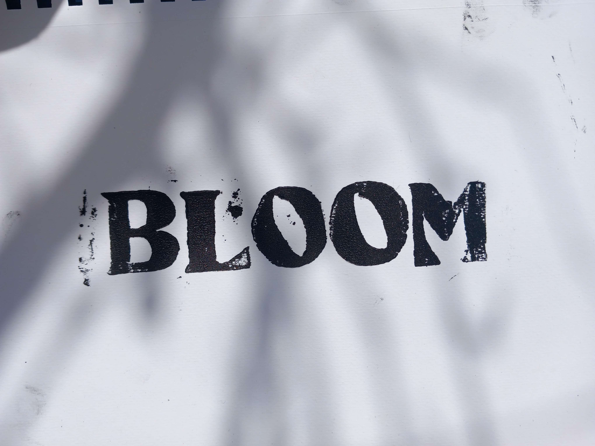
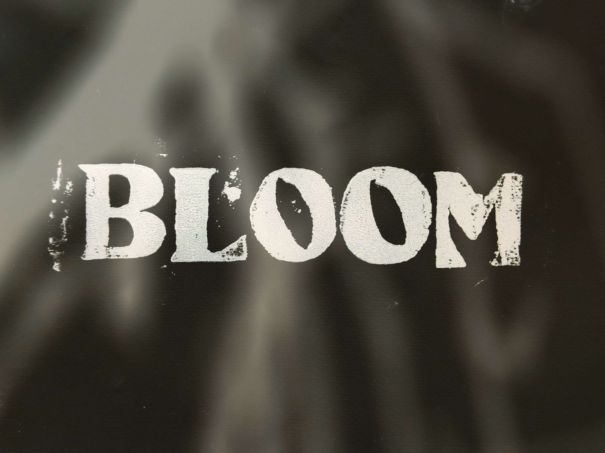

La linogravure est une technique que j'aime beaucoup car elle permet de
créer une image facilement reproductible ce qui permet de pouvoir tester
différentes choses au tirage, de plus les imperfections de l'encre permettent
de rendre chaque tirage vraiment unique. Je m'en sert ainsi pour faire des
illustrations avec des noirs et blancs très forts et contrastés mais aussi pour
d'autres choses comme le titrage de mon court métrage Bloom
par exemple dans lequel je tenais à tout faire à la main.


- 
- 